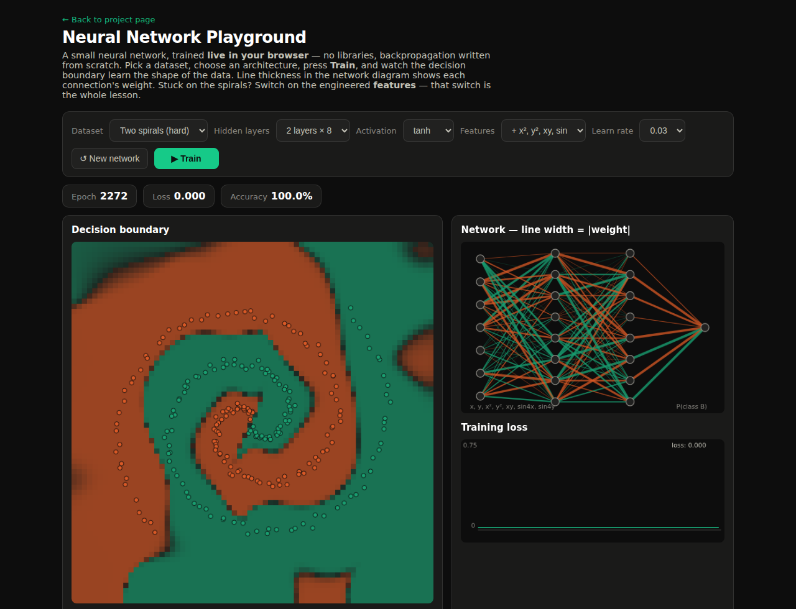

A neural network you can watch learn. The forward pass, backpropagation and gradient descent are all written from scratch in vanilla JavaScript — no TensorFlow, no libraries — and the decision boundary repaints live as the weights change.
Neural networks are the machinery behind almost everything called "AI" today, and every course teaches the same diagram of circles and arrows. But frameworks like TensorFlow hide the actual mechanics so completely that it is possible to train models for months without ever seeing what gradient descent does. I wanted to close that gap for myself the hard way: implement the whole thing — forward pass, backpropagation, the optimiser — with nothing but JavaScript arrays, and make the learning process visible enough that anyone can watch it happen.
The scope was deliberately strict: no libraries at all, everything runs client-side in the browser, and every important quantity — the decision boundary, the connection weights, the loss curve — has to be visible live while the network trains.
Solo build. The result is a playground where you pick one of four datasets (blobs, XOR, circles, two spirals), choose the architecture — up to three hidden layers, tanh or ReLU — and press Train. Three live views update together: the decision boundary heatmap repaints as the network's opinion of the plane changes, the network diagram draws every connection with line thickness proportional to its weight, and the loss curve tracks training progress numerically.
Under the hood it is a multilayer perceptron with a sigmoid output trained on binary cross-entropy, using minibatch stochastic gradient descent with momentum. The backpropagation is the textbook chain rule, implemented by hand over plain arrays — about sixty lines that taught me more than any lecture on the subject.

The mathematics was the easy half; making training behave was the real project. Three problems shaped the build:
The finished playground trains to 100% accuracy on all four datasets — circles and XOR in a few hundred epochs with raw inputs, and the two-spirals benchmark in roughly two thousand epochs once engineered features are enabled, all in seconds of real time in the browser. More importantly, it demonstrates the concepts employers actually probe for: I can point at the exact lines where backpropagation applies the chain rule, explain why momentum rescued the spiral, and show — not just say — that feature engineering can beat model size.
It is also the most-played thing on this site: launch it, watch a network fail on the spirals with raw inputs, flip the features switch, and watch the same network win.